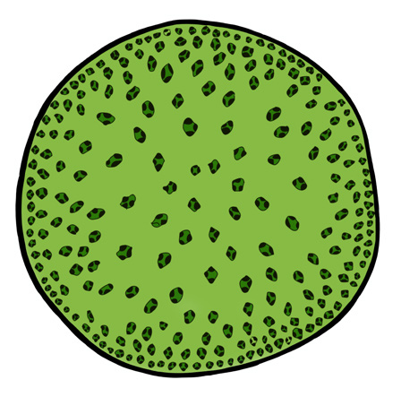
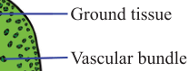

82
Student’s Book - Form Two
Biology for Secondary Schools
Dicotyledonous roots
Dicots have tap roots which are single thick roots that grow deep into the soil and have smaller lateral roots. The vascular bundles of dicot roots are located in the middle of the root. The xylem is lobed, centrally positioned and star-shaped. The phloem is found between the extensions of the xylem, as shown in Figure 4.7.
Root hair
Pericycle
Endodermis
Epidermis
Phloem
Xylem
Cortex
Figure 4.7: Cross-section of a dicot root
Monocotyledonous stems
The arrangement of vascular bundles in roots and stems differs significantly.
In monocot stems, the arrangement of vascular bundles is random or scattered throughout the ground tissue, as indicated in Figure 4.8. The ground tissue is not differentiated into distinct region like cortex and pith. Most of the vascular bundles are concentrated towards the periphery of the stem and are more scattered towards the centre.
These vascular bundles are surrounded by parenchyma cells in the ground tissue region.
Ground tissue
Vascular bundle
Epidermis


Figure 4.8: Cross-section of a monocot stem
Dicotyledonous stems
In a dicot stem, the vascular bundles are arranged in a ring around the central pith, as seen in Figure 4.9. In each vascular bundle, the xylem and phloem are separated by a vascular cambium that contains cells which divide to expand the girth of the stem. The vascular cambium also replaces the old xylem and phloem tissues. Within the vascular bundles, the xylem is located interior to the vascular cambium ring, and the phloem is exterior. In between the vascular bundles and the epidermis, there are parenchyma cells forming the cortex region.
Epidermis
Cortex
Pith
Xylem
Vascular cambium
Phloem

Figure 4.9: Cross-section of a dicot stem
08/04/2026 10:18:22
Vasculrbnde